Cleaning up optical crosstalk between simultaneously imaged planes in a two-photon mesoscope
Contributors
- Natalia Orlova — Microscope setup; initial decrosstalk algorithm (trace-based unmixing).
- Sam Seid — Ground-truth data collection.
- Arielle Leon & Sean McCulloch — Integration of the algorithm into the pipeline.
- Johannes Friedrich — Discussion of the algorithm; suite3d implementation and testing.
- Jerome Lecoq — Discussion of the algorithm.
Two-photon mesoscopes let us record from a lot of neurons at once, in the Allen Brain Observatory and many other projects across the Institute. One trick for recording even more neurons is to split the laser and image two depths at the same time. It comes with a subtle problem: the two planes bleed into each other.
A faint copy of one plane shows up as “ghost” cells in the other. Left uncorrected, those ghosts look like real neurons. Just as important, the bleed-through contaminates the activity traces (ΔF/F) extracted from genuine ROIs, degrading real cells — not only adding spurious ones.
This post walks through the problem and the correction we run in production: what the crosstalk is and where it comes from, why the obvious fixes don’t work, how our estimator works, and how well it does — measured against real ground-truth recordings, against simulations, and against two off-the-shelf alternatives (naive ICA and suite3d). I’ll also cover the quality-control tooling we built to catch the rare failures.
1. What is paired-plane crosstalk?
To image more neurons per session, a two-photon mesoscope can be upgraded to capture two depths at once. The excitation laser is split into two beams, one is given a small time delay, and the two are focused at two different depths. We refer to this beam-splitting configuration internally as the multiscope [1].
The multiscope is one of a broader family of temporally-multiplexed two-photon systems — spatiotemporal multiplexing [2], reverberation microscopy [3], and light-beads microscopy [4] — that excite multiple planes and separate them by photon arrival time, and all face the same crosstalk (cf. the Diesel2p mesoscope [5], which uses a separate resonance scanner per beam and so has no comparably structured crosstalk).
Both depths are excited within a single inter-pulse interval (~16 ns at a 62.5 MHz repetition rate), and the fluorescence from each is separated by a time-gated collection window — one gate per plane.
The catch is fluorescence lifetime. A GCaMP molecule keeps emitting for a few nanoseconds after it is excited (the fluorescence lifetime of GFP-based indicators is ≈2.6 ns [6]), so the tail of one plane’s fluorescence spills into the other plane’s collection gate. Those stray photons get counted as the wrong plane’s signal. That is the crosstalk (Figure 1).
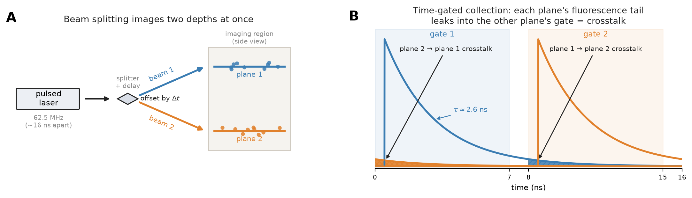
Because it is optical/temporal, the amount of crosstalk is a property of the acquisition, not of any particular neuron. In a well-tuned and balanced session it is only a few percent — invisible at native contrast, but enough to plant visible ghosts. The clean way to see it is a single-beam recording: image a plane with its own beam only (“clean”), then with both beams on (“crosstalk”). The extra ghost cells that appear in the dual-beam image are the bleed-through (Figure 2).
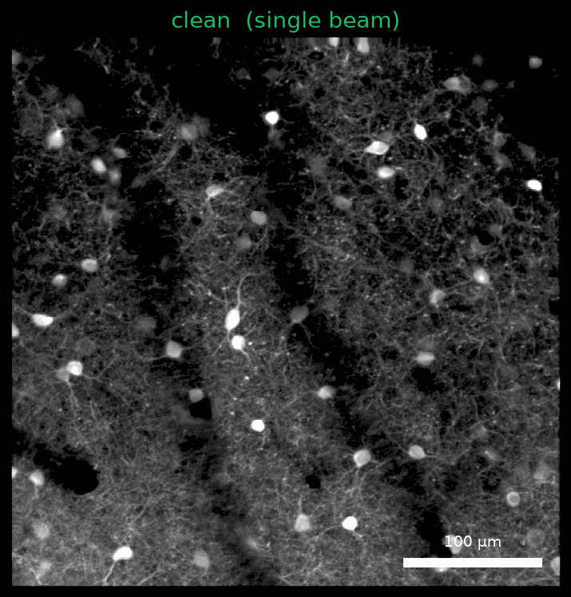
2. Why the obvious fixes don’t work
If crosstalk is just “plane B leaking a fraction of its signal into plane A,” why not estimate that fraction directly — say, regress one plane’s pixel time series against the other’s and subtract? Two confounds get in the way.
The two planes share real biology. They sit at the same location, a little apart in depth, so they see much of the same vasculature shadows and neuropil background. That makes the two images genuinely correlated even with zero crosstalk. Any method that works by making the two planes independent — blind source separation (ICA [7]), or simply minimizing their correlation — is misled by this shared anatomy: minimizing correlation never bottoms out at the right amount and keeps over-subtracting, while ICA’s assumption that the planes are independent is false for genuinely correlated planes, so its coefficient comes out biased — by an amount, and even a direction, that changes with the data (§5).
The two planes don’t move together. You might hope to line the planes up once and just subtract — but a pair does not move as a rigid unit. Each plane is motion-corrected independently, and when we compare the per-frame rigid shifts across 69 hour-long sessions, the two planes of a pair follow visibly different XY trajectories — increasingly so the farther apart in depth they sit (Figure 3).
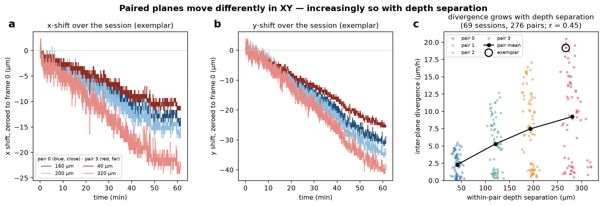
You can see the consequence directly. Because the planes slide relative to each other, the bleed-through is not pinned to a fixed spot: as you step through a session’s epochs, the ghost cells (a copy of the paired plane) visibly drift across the field of view while the plane’s own cells stay put (Figure 4).
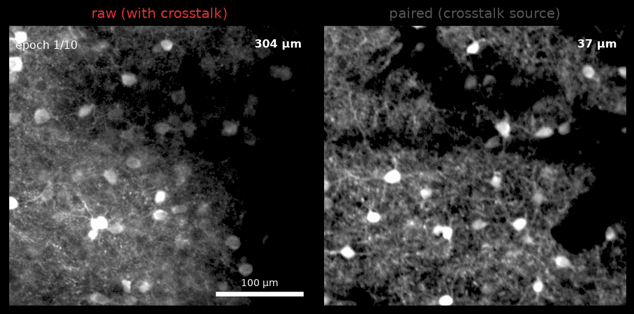
Those facts — shared anatomy and a moving, differential offset between planes — are why the correction is built the way it is: work on motion-corrected episodic mean images (instead of signal time series), restrict attention to bright ROIs (to avoid vasculature), and minimize mutual information rather than plain correlation (to account for the shared structure).
3. The correction
The model
For a plane A imaged against its partner B, the observed images are a linear mix of the true (crosstalk-free) images:
\[ \begin{bmatrix} \text{imaged}_A \\ \text{imaged}_B \end{bmatrix} = \begin{bmatrix} 1-\alpha & \beta \\ \alpha & 1-\beta \end{bmatrix} \begin{bmatrix} \text{true}_A \\ \text{true}_B \end{bmatrix} \]
so α is the fraction of A’s own signal that leaks out into B, and β is the fraction of B that leaks in and contaminates A. Undoing the crosstalk is just inverting this 2×2 mixing matrix. The whole problem is estimating (α, β).
Note this is a relative crosstalk between two planes of different brightness — so the brightness imbalance between the planes matters, and α and β are generally not equal.
Also note that this shares a fundamental principle with ICA; how the two differ in practice is discussed below.
Lastly, applying the inverse mixing matrix not only removes crosstalk signal but also restores the plane’s own signal that was subtracted out by the crosstalk. The correction is therefore a reconstruction of the plane’s own signal, not just a subtraction of the paired plane’s ghost (Figure 7B).
Estimating (α, β)
- Work on registered mean images. Each plane is motion-corrected, and the paired plane’s raw movie is registered using the same correction (“registered-to-pair”). This solves the problem of differential motion in XY.
- Bright-ROI bounding boxes. Rather than the full frame, the estimator works inside bounding boxes around the brightest ROIs of both planes (Figure 6, left). This avoids the shared low-frequency background — the key to not over-subtracting shared anatomy.
- Grid search minimizing mutual information. For each candidate (α, β) on a grid, the estimator unmixes the pair and computes the mutual information (MI) between the two reconstructed images, averaged over the ROI boxes. The chosen (α, β) is the one that minimizes MI — the point at which the two planes carry the least information about each other (Figure 6, right). Using MI rather than correlation matters: correlation falls monotonically as you subtract more, which would reward ever-larger coefficients; MI has a genuine minimum at the right amount.
- Averaging for stability. Coefficients are averaged across imaging epochs and across the two directions of a pair (the leak A→B estimated for plane A should equal the leak into B estimated for plane B — see §6), then stored per plane.
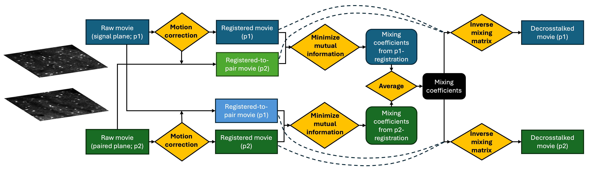
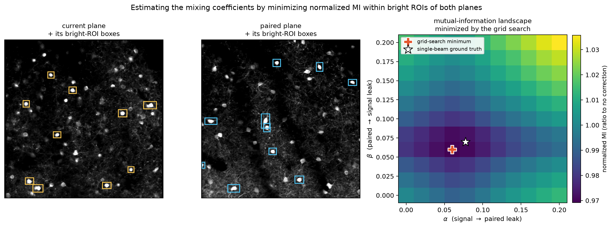
4. Does it work?
How the ground-truth data were collected
To know the true crosstalk we need a recording where one plane’s contribution to the other is known. We get that by blocking one of the two beams: with a beam blocked, its plane is never excited, so whatever appears in that plane’s detector channel is pure crosstalk leaking from the open plane — a dim, scaled replica of the open plane’s image, acquired simultaneously and therefore perfectly co-registered and activity-matched. Regressing the blocked channel onto the open one gives the leak fraction directly, with no estimation and no confound from shared anatomy or motion. Blocking each beam in turn measures both directions of the 2×2 mixing matrix (Figure 7).
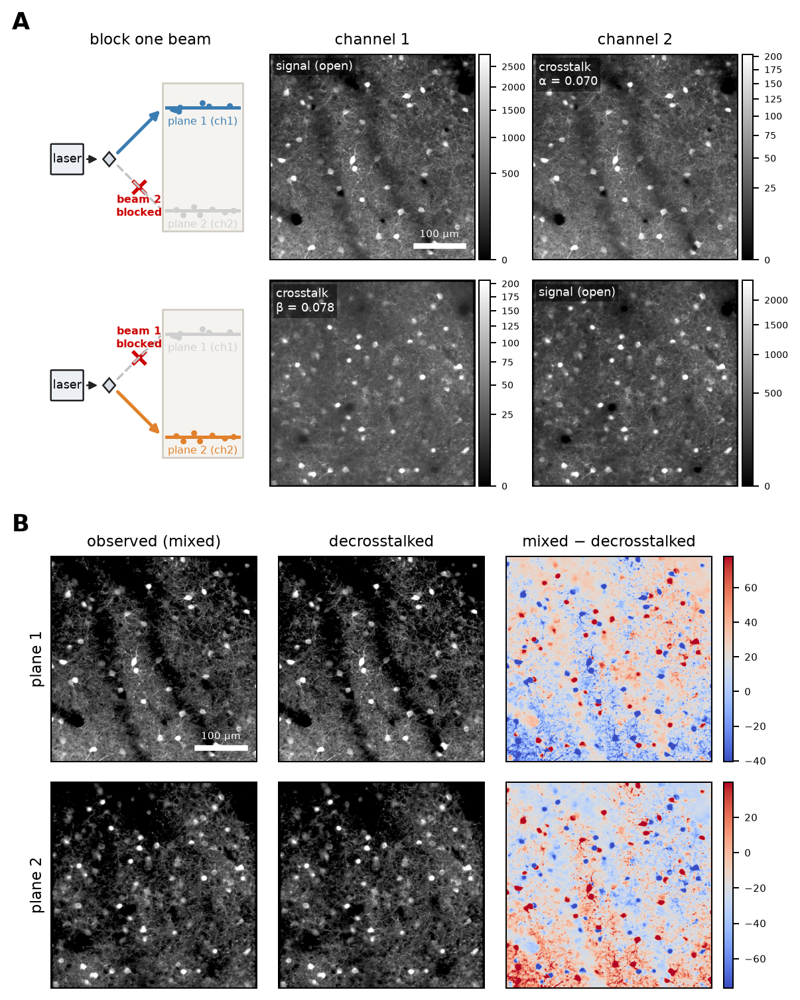
Seeing the correction
On the ground-truth data we can walk a plane through all three states — imaged single-beam (“clean”, the truth), both-beam (“observed”, with crosstalk), and after correction (“decrosstalked”) — for both planes at once (Figure 8). The correction nudges the observed image back toward the clean one; on the high-SNR session mean the change is deliberately subtle (only a few percent of the signal is crosstalk), which is exactly why quality control is hard (§6).
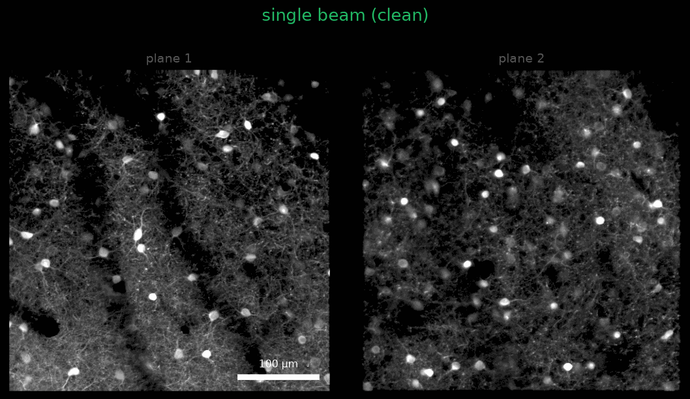
The crosstalk is far more striking on a real session when you step through its epochs. Because the two planes move differently (§2), the ghost is not static — it drifts across the field of view over the session. In the raw episodic mean movie below (middle), watch the soft ghost cells in the upper field move in lockstep with the paired plane (right); after decrosstalk (left) they are largely gone while the plane’s own cells stay put.
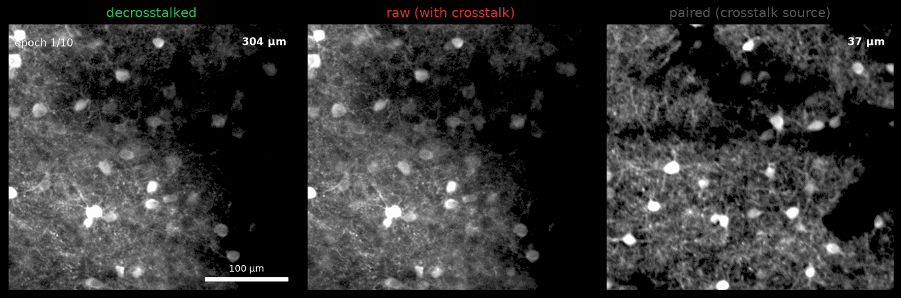
It also works in dense GCaMP8 samples. Everything above is sparse pan-inhibitory data. In pan-neuronal soma-targeting recordings (SNAP25-Cre;TITL2-RiboL1-GCaMP8s), far more cells are labeled. The dense paired plane casts a correspondingly dense ghost into its partner, and — because the planes move differently — that ghost drifts across epochs; the same estimator removes it (Figure 10).
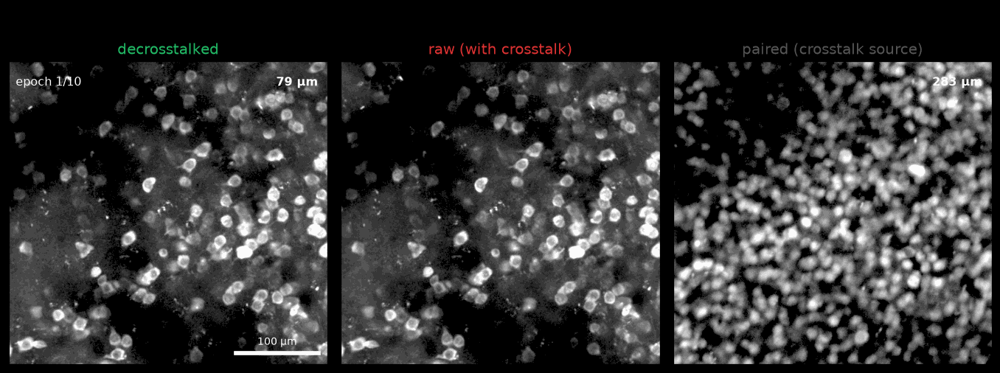
The removed structure is exactly the paired plane’s cells — the crosstalk — and nothing else. But “looks clean” is not a measurement. For that we need ground truth.
5. How accurate is it? Ground truth, simulation, and a bake-off
The single-beam ground-truth recordings give us the true leak fractions directly (regress the blocked channel on the open channel within ROIs): 0.070 / 0.078 for the 80 MHz laser and 0.029 / 0.027 for the 62.5 MHz laser. That lets us score any estimator by how close its (α, β) come to the truth, and by how much signal↔︎paired dependence is left after unmixing. We compared three estimators:
| estimator | idea |
|---|---|
| production | minimize normalized MI over bright-ROI boxes |
| naive ICA | FastICA blind source separation |
| suite3d | correlation-inflection estimator [8] (code) |
For a fair comparison, all three estimators were run on the exact same bright-ROI boxes, so the test isolates the estimator itself.
On the real ground-truth data, production essentially nails it. Its (α, β) sit right on the ground-truth values (Figure 11), its mean coefficient error is 0.007, and it drives the residual signal↔︎paired correlation from the raw ceiling (0.465) down to 0.189 — i.e. to the shared-anatomy floor (0.186). It removes essentially all the removable crosstalk.
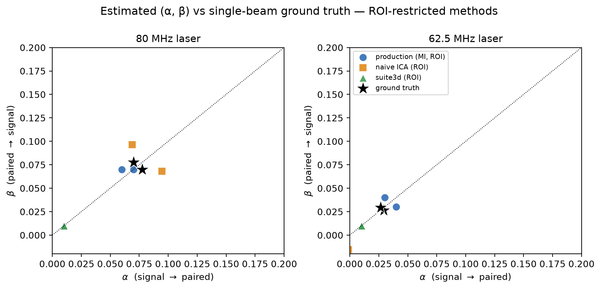
On simulations — impose a known (α, β) on the clean images (a full 2-D grid, not just the α = β diagonal) and try to recover it — the same picture holds across the whole plane (Figure 12). Production’s estimates land right on the true grid points; naive ICA is systematically biased — over-estimating on the 80 MHz laser and under-estimating on the low-crosstalk 62.5 MHz laser; and suite3d collapses to ≈0.01 regardless of the true value, ignoring the signal almost entirely.
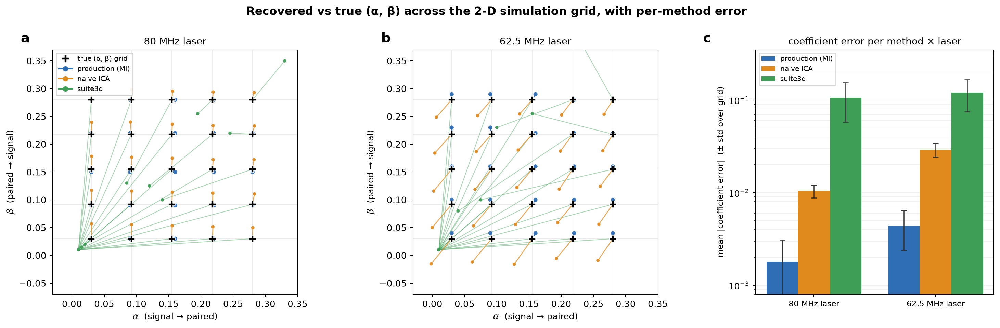
Takeaway from the bake-off. All three methods were fit on identical bright-ROI patches, so the comparison isolates the estimator. The ranking is production > naive ICA > suite3d, and production is the only method that reliably reaches the shared-anatomy floor. suite3d’s correlation-inflection point [8] was likely intended to separate genuine shared correlation from crosstalk — i.e., to cope with the shared anatomy — but it consistently under-corrected. When tested on the real data at the full frame, it corrected somewhat but still under-corrected in most cases.
6. Quality control
Across a large pan-inhibitory dataset, most planes are corrected well — but a few are not, and the failures are easy to miss. We built two QC tools.
An interactive visual-QC app (Figure 13) lets a labeler flip PRE↔︎POST and toggle the paired (crosstalk-source) view at matched contrast, scrub epochs, and label each plane good / under-corrected / over-corrected / unsure. These human labels are the ground truth the automatic metrics are validated against.
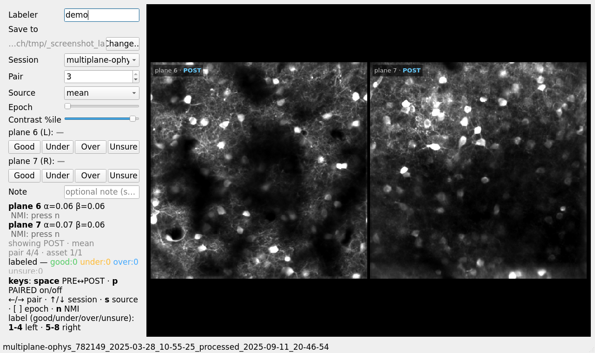
p toggles the paired view.Automatic QC checks exploit two structural facts about a correct estimate (Figure 14):
- The MI landscape is stable across epochs and has one well-located minimum. If the per-epoch landscapes wander or the minimum is multi-modal, the estimate is untrustworthy. In practice the minimum barely moves (σ ≈ 0.005–0.02).
- Reciprocity. A physical leak between planes p and q is estimated twice: the leak p→q appears as α of plane p and as β of plane q. For a sound estimate these agree (α_p ≈ β_q); a large reciprocity gap flags a one-plane segmentation or registration breakdown that per-plane views miss. Median gap ≈ 0.01.
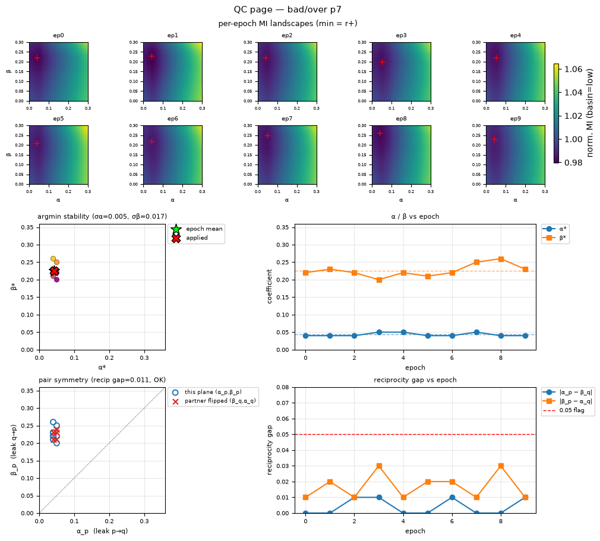
One important lesson from QC: judge decrosstalk on individual epochs, not the session mean. Decrosstalk is a linear, per-frame operation, so the corrected session-mean is exactly the average of the corrected epochs — and the high-SNR mean can camouflage residual crosstalk that individual, lower-SNR epochs expose. A plane whose mean looks perfectly clean can still show per-epoch artifacts.
Summary
Paired-plane crosstalk in a beam-splitting mesoscope is an optical/temporal artifact — a few-percent ghost of one depth plane bleeding into the other. Because the two planes share real anatomy and don’t move in lockstep, naive decorrelation over-subtracts. Estimating the mixing coefficients by minimizing mutual information inside bright ROIs on registered mean images sidesteps both confounds, and — validated against single-beam ground truth, simulations, and two alternative estimators — removes essentially all removable crosstalk, reaching the irreducible shared-anatomy floor and clearly beating naive ICA and suite3d. QC tooling catches the rare failures.
Resources
- Production algorithm:
aind-ophys-decrosstalk-roi-images - Visual-QC app:
multiscope-decrosstalk-qc-app